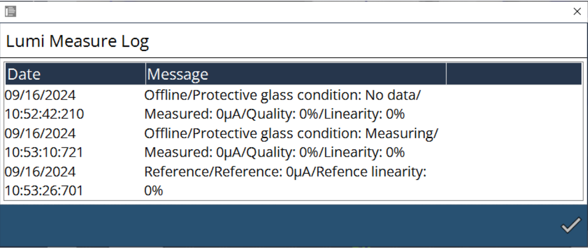
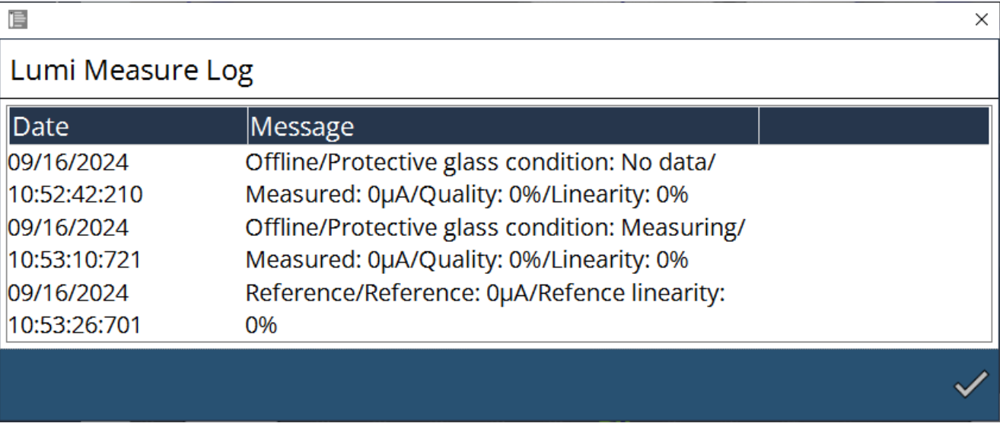

Monitoraggio del vetro di protezione
Parametrizzazione
Il monitoraggio del vetro di protezione è un sistema che monitora lo stato del vetro di protezione. Potrebbe impedire di produrre parti di bassa qualità o addirittura danni alla macchina.
Il comportamento è definito come descritto di seguito:
-
Quando il valore di qualità del vetro di protezione è inferiore al livello di errore durante il taglio: la macchina interromperà la lavorazione, il raggio si spegnerà e una finestra si aprirà sulla parte anteriore dell’HMI.
-
Facendo clic sul pulsante Chiudi nella finestra, la macchina continuerà taglio dell’attuale lamiera. Prima di lavorare la lamiera successiva, eseguirà una misurazione del vetro di protezione. Se la qualità è ancora al di sotto del livello di errore, la finestra si aprirà di nuovo. Facendo clic su "Chiudi" si consentirà alla macchina di continuare la lavorazione. La finestra apparirà di nuovo alla fine della lamiera.
-
Se il vetro è contaminato fin dall’inizio, dopo aver tagliato il primo contorno, la macchina si fermerà ed eseguirà una misurazione del vetro di protezione. Se la qualità è al di sotto del livello di errore, si aprirà una finestra. Facendo clic sul pulsante Chiudi, la macchina potrà continuare a tagliare l’attuale lamiera.
Sono possibili una misurazione offline una online:
| Misurazione offline | Monitoraggio online | |
|---|---|---|
Tipo di misurazione |
Condizioni di misurazione fissa |
Misurazione in loco |
Trigger |
Limite relativo al valore di riferimento "Pulito" |
Limite relativo al valore di riferimento "Pulito" |
Effetto |
Risultato in percentuale |
Reazione alla fine del contorno |
Scopo |
Impedisce la produzione di sfridi del materiale |
Attiva la misurazione offline |
Misurazione offline: la misurazione offline viene utilizzata per verificare la qualità del vetro in condizioni stabili. Durante la misurazione offline vengono emessi tre diversi livelli di potenza laser, ciascuno per un periodo di tempo specifico, in genere 500 ms. La luce riflessa dal vetro viene misurata a ogni livello di potenza, e la luminosità di riflessione normalizzata viene calcolata e confrontata con un valore di riferimento, che si ottiene con lo stesso metodo. In questo calcolo è coinvolto anche un fattore rottura offline per determinare la qualità del vetro. Per lo stesso valore di luminosità di riflessione, un fattore rottura più elevato indica una migliore qualità del vetro. Pertanto, solo quando il vetro è significativamente sporco verrà attivato un avvertimento o un errore.
Monitoraggio online: la misurazione online viene utilizzata per verificare la qualità del vetro durante il taglio. Ogni volta che c’è un’uscita laser, viene calcolato il valore medio del luce riflessa per un periodo di tempo e un portabasso viene applicato a questo valore. Il fattore rottura online viene poi tenuto in considerazione per determinare la qualità finale del vetro. A causa della natura instabile dell’uscita laser e della retroriflessione riflessione dalla lamiera di taglio, il fattore rottura online è significativamente più alto rispetto a quello del procedimento offline.
La parametrizzazione viene eseguita nella pagina delle impostazioni:

Misurazione della luminosità
La misurazione del vetro di protezione si basa su una misurazione della luminosità. Se la condizione è Pulito, lo stato del vetro di protezione è buono per procedere con un taglio in grado di garantire buoni risultati. Se la condizione è Contaminata, il vetro di protezione è in cattivo stato ed è consigliabile modificare il vetro di protezione per avere buoni risultati di taglio.

A seconda del risultato della percentuale del valore di qualità, pulire o sostituire il vetro di protezione.
-
80%-90% → pulito
-
< 80% → sostituire

Con le voci precedenti, gli assi X e Y si spostano verso il valore posizionato.

L’esecuzione del programma seguirà i dati di frequenza e ciclo secondo le esigenze dell’utente. Il parametro di potenza è predefinito come incremento di 500 W, 1000 W e 1500 W.
Anche il diametro del fuoco, la distanza del fuoco e il tempo di sosta sono stati modificati secondo le esigenze dell’utente. I valori inseriti possono essere monitorati durante l’esecuzione del programma. Il tempo di sosta specificato manterrà il programma fino al tempo di sosta configurato, quindi ci sarà un’interruzione.
La modalità di misurazione ha dati offline e di riferimento. Nella selezione offline, l’utente può eseguire il programma e controllare lo stato del vetro di protezione. Nella selezione del riferimento, l’utente può verificare in modo incrociato i dati e i valori di qualità e linearità. È possibile procedere al salvataggio con la relativa opzione. Generalmente, la selezione del riferimento sarà scelta quando il vetro di protezione è più recente che dà una buona serie di risultati.
Quando il programma di misurazione Lumi è in funzione viene preso il protocollo dei dati, che può essere letto
in LumiMeasurelog.txt dal percorso
C:\ProgramData\Metamation{APPNAME}\Log\Currentyear\Currentmonth\Currentday o
nell’interfaccia utente.
 

Con riferimento al calcolo di cui sopra, i seguenti parametri verranno aggiungi al file MK per ottimizzare la funzione di monitoraggio:
-
Fattore rottura offline
-
Fattore rottura online
-
Limite di avvertimento in percentuale
-
Limite di errore in percentuale
-
Ritardo in secondi per segnalazione avvertimento